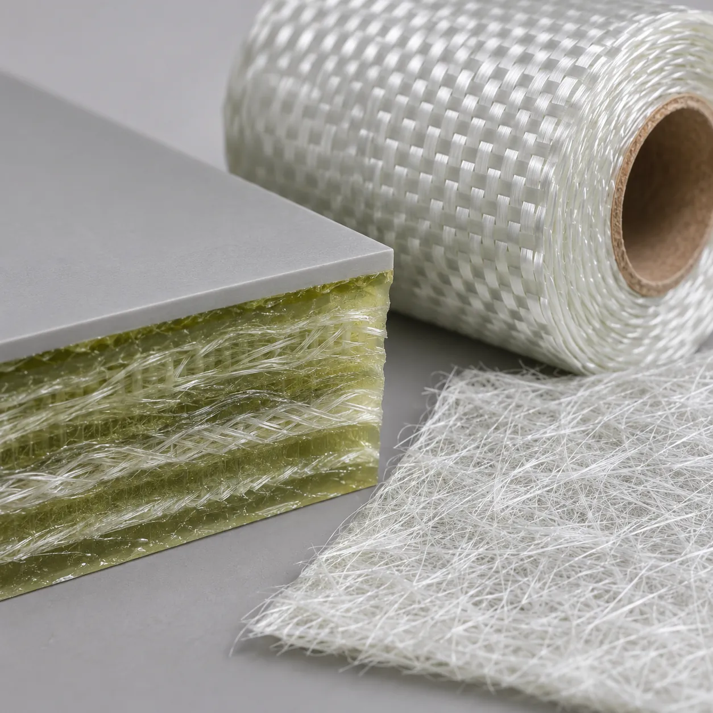

Dual laminate: a thermoplastic liner with an FRP backbone
Chemical resistance on the inside, strength on the outside. Why large equipment is often built from two materials in one wall.
Plasto-Fab team · 2 min read

Thermoplastics such as PP, PVC and PVDF stand up to aggressive chemicals, but on their own they are not always strong or stiff enough for large tanks, tall scrubbers or equipment under load. Glass-fibre reinforced plastic (FRP) is strong and light, but its resin is not the best barrier against every chemical. A dual laminate puts each material where it works best.
How the wall is built
- The thermoplastic liner. The only part that touches the chemical, welded into a leak-tight shell.
- A bonding layer that ties the liner to the laminate.
- The glass-fibre laminate. Glass fibre in polyester or vinyl ester resin, wound or laid over the liner, carries the load.
- An outer, resin-rich surface that protects the laminate.
The common pairings
- PP-FRP: a polypropylene liner with an FRP shell.
- PVC-FRP: PVC's chemical resistance on the inside, FRP's strength outside.
- PVDF-FRP: a PVDF liner for extreme chemical service.
Where it pays off
Large storage and process tanks, scrubbers and ducting, anywhere the chemical needs a thermoplastic and the size or the loads need more strength than the thermoplastic alone can give. The equipment is easier to move, lift and install than metal equipment for the same duty. See all the materials we build with.